1開案
點 ＋新增服務建議書 開案
→ 左側 Projects 出現這個標案
畫面用詞一律以系統上顯示的名稱為準；截圖上的黃數字＝步驟編號。
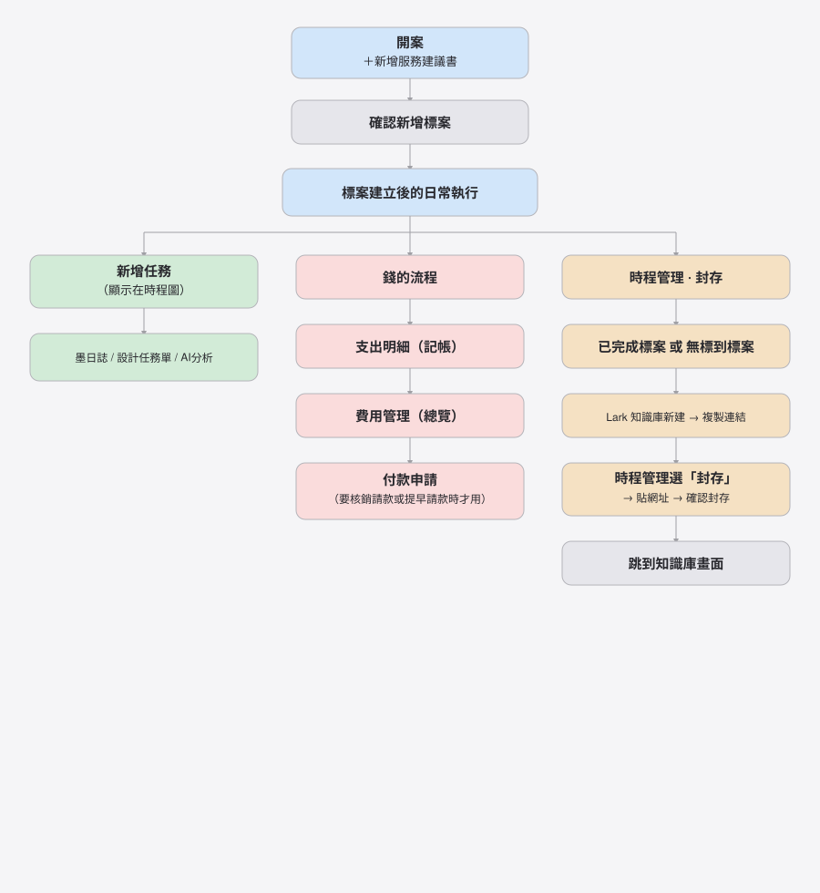
步驟 1｜開案 · 步驟 2｜新增任務 · 步驟 3｜支出與請款 · 步驟 4｜封存
打開系統後，畫面大致分成五塊：
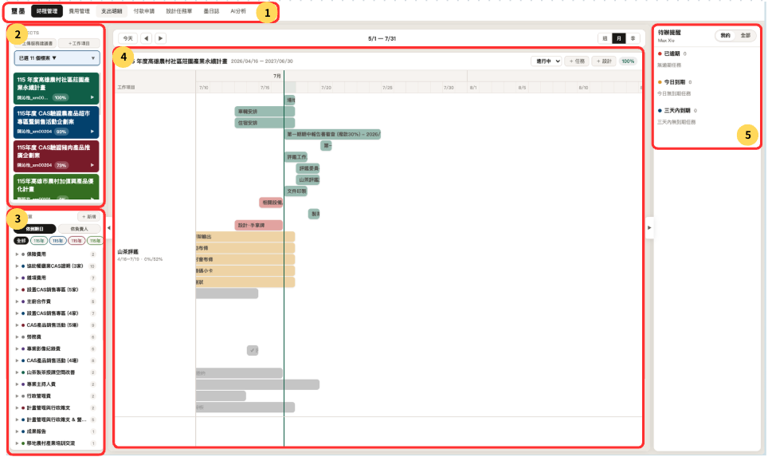
| # | 位置 | 這裡可以做什麼 |
|---|---|---|
| 1 | 頂部頁籤 | 切換：時程管理、費用管理、支出明細、付款申請、設計任務單、墨日誌、AI分析；右側 操作手冊 會開新分頁 |
| 2 | 左側 Projects | 選標案；開案按 ＋新增服務建議書；補項目按 ＋工作項目 |
| 3 | 左側任務清單 | 按 ＋ 新增 建立任務 |
| 4 | 中間時程管理 | 看甘特圖進度。標案狀態有三種：未開始、進行中、封存。上方可切換顯示 週／月／季 |
| 5 | 右側待辦提醒 | 看自己任務：已逾期、今日到期、三天內到期 |
在左側 Projects 點 ＋新增服務建議書：
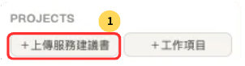
接下來有兩種做法，選一種即可。
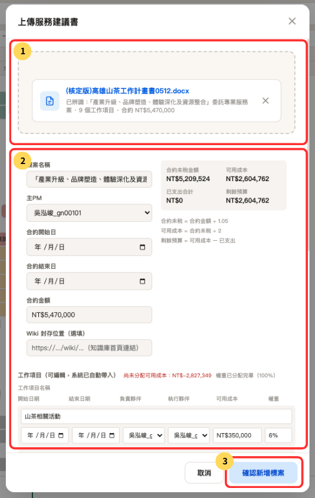
| # | 請這樣做 |
|---|---|
| 1 | 上傳服務建議書（建議選 .docx），等系統顯示「已辨識…」 |
| 2 | Wiki 可先不填（封存時再貼即可）。請確認 主 PM、工作項目 內容正確 |
| 3 | 按 確認新增標案。成功後，左側 Projects 會出現這個標案 |
| 情況 | 建議 |
|---|---|
| 有 Word 檔 | 用 .docx 原生表格（不要貼截圖進 Word） |
| 只有圖片／掃描 | 目前 OCR 常不準，請手動改欄位後再確認 |
| 未來 | 計畫接 Claude 圖片分析（尚未上線） |
更完整的寫法說明，請另外打開同資料夾的文件：
《服務建議書上傳格式規範》（教你封面、經費表要怎麼寫，系統才辨識得準）。
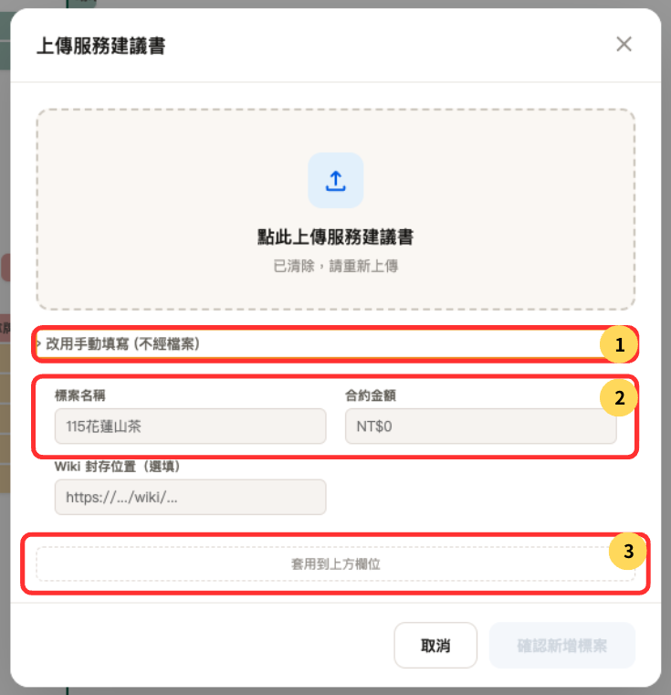
| # | 請這樣做 |
|---|---|
| 1 | 點 › 改用手動填寫 (不經檔案) |
| 2 | 填 標案名稱、合約金額 |
| 3 | 點 套用到上方欄位（套用後會出現主 PM、工作項目等欄位） |
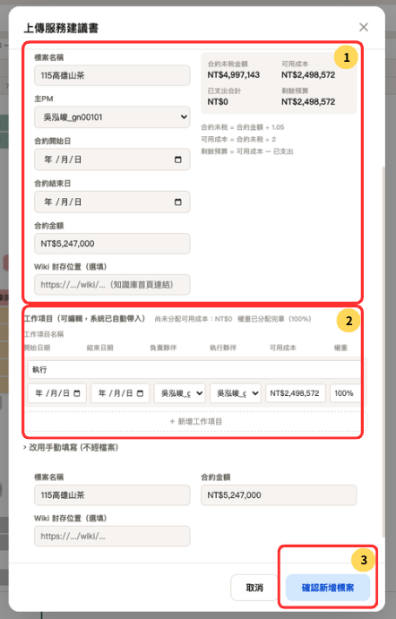
| # | 請這樣做 |
|---|---|
| 1 | 填 主 PM、合約開始／結束日 |
| 2 | 填 工作項目（名稱、權重、可用成本等） |
| 3 | 檢查無誤後，按 確認新增標案 |
標案出現在左側後，第一件事通常是新增任務。
點左側下方任務清單的 ＋ 新增：
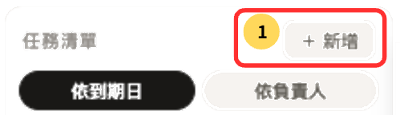
接下來填寫任務資料。
圖 2｜建立新任務：填寫後按新增。
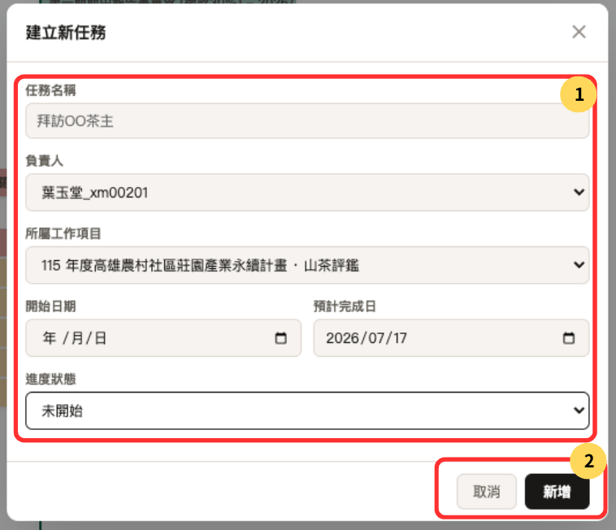
| # | 請這樣做 |
|---|---|
| 1 | 填寫欄位：任務名稱、負責人、所屬工作項目、開始／結束日期、進度狀態 |
| 2 | 確認後按 新增 |
圖 3｜到 時程管理 確認甘特圖已出現該任務。
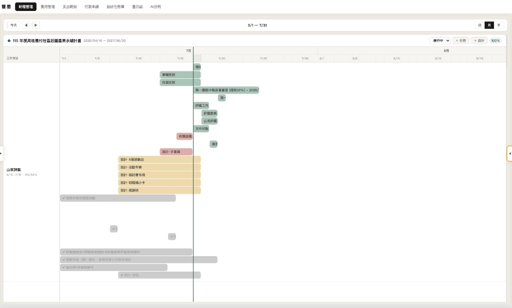
| # | 請這樣做 |
|---|---|
| 1 | 點頂部 時程管理 |
| 2 | 確認甘特圖上已看到剛新增的任務 |
圖 1｜先點 墨日誌，再點 ＋ 填寫今日日誌。
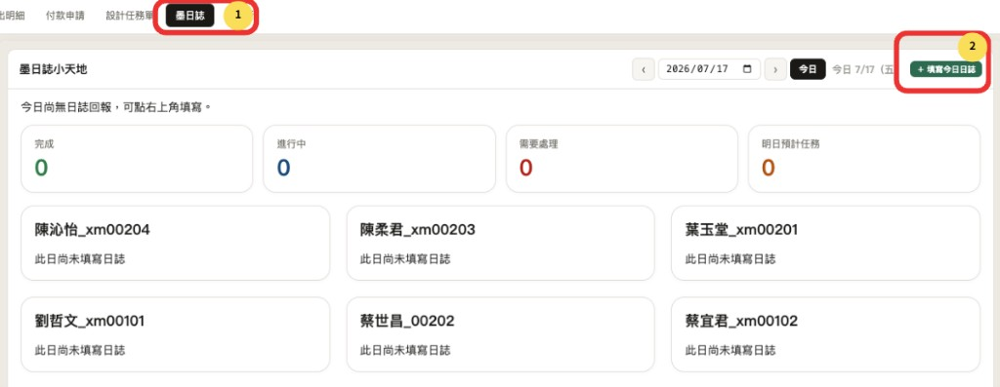
| # | 請這樣做 |
|---|---|
| 1 | 點頂部 墨日誌 |
| 2 | 點 ＋ 填寫今日日誌 |
圖 2｜每日工作回報
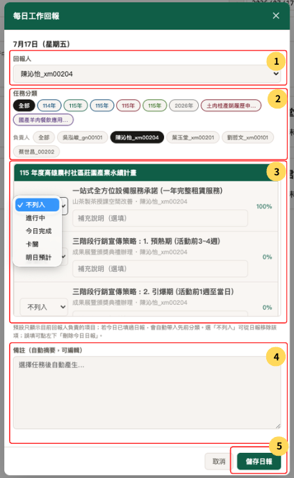
| # | 請這樣做 |
|---|---|
| 1 | 選 回報人 |
| 2 | 可用 任務分類、負責人 篩選 |
| 3 | 看到自己的任務後，選擇是否列入，並填寫說明 |
| 4 | 已選任務會顯示在下方備註 |
| 5 | 確認無誤後，點 儲存日報 |
待更新
切到 AI分析 → 選標案 → 開始分析。
請照這個順序理解：
支出明細（記帳）→ 費用管理（看總覽）→ 付款申請（要請款才用）
圖 1｜點頂部 支出明細，再點 ＋ 新增支出明細，會出現圖 2。
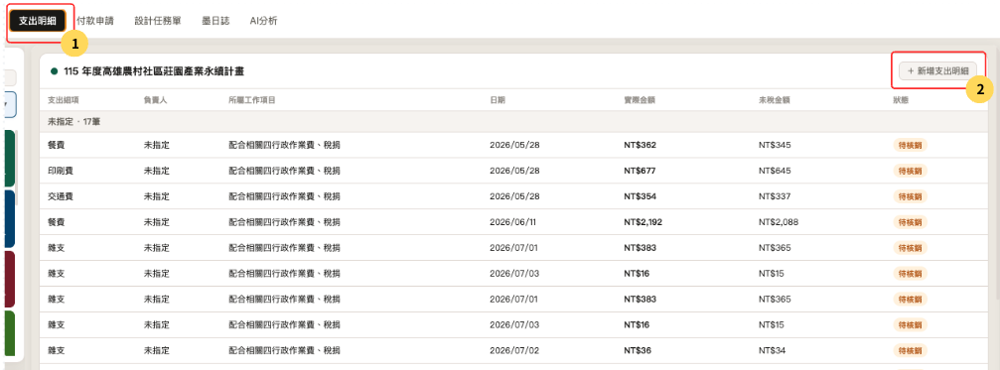
| # | 請這樣做 |
|---|---|
| 1 | 點頂部 支出明細 |
| 2 | 點 ＋ 新增支出明細 |
圖 2｜新增支出明細
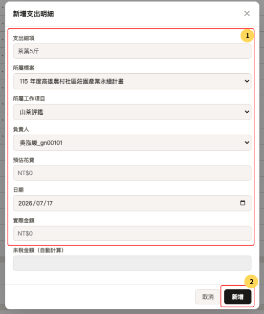
| # | 請這樣做 |
|---|---|
| 1 | 填寫欄位：支出細項（花在什麼）、所屬標案、所屬工作項目、負責人、預估花費（沒有可填 0）、日期、實際金額。未稅金額會自動算，不用填。 |
| 2 | 確認無誤後，點 新增 |
新增後，到 費用管理 可看到各工作項目的已支出加總（來自支出明細）。
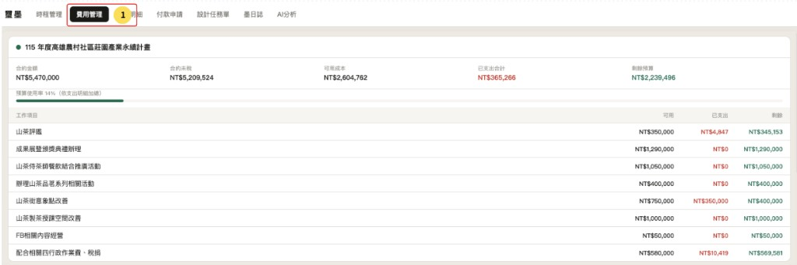
| # | 你可以在這裡看到 |
|---|---|
| 1 | 標案合約金額、已支出合計、剩餘預算 |
| 2 | 各 工作項目 的可用／已支出／剩餘 |
核銷步驟見下方 付款申請。
什麼時候才用：
圖 1｜點頂部 付款申請，填寫後點 確認資料預覽。
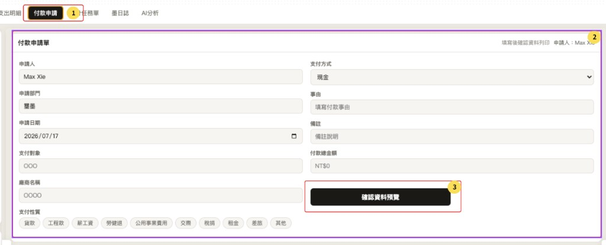
| # | 請這樣做 |
|---|---|
| 1 | 點頂部 付款申請 |
| 2 | 填寫欄位：申請人（通常已帶入）、申請部門、申請日期、支付對象、廠商名稱、支付性質、支付方式、事由、備註、付款總金額 |
| 3 | 點 確認資料預覽 |
圖 2｜預覽確認格式無誤後列印。
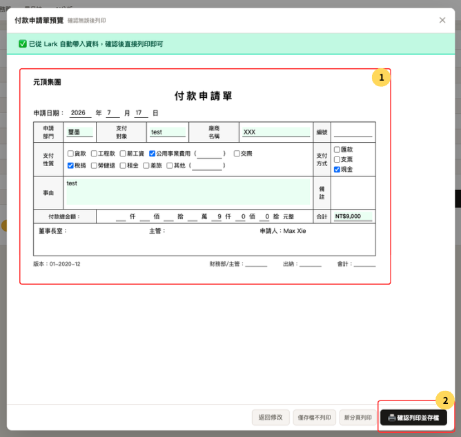
| # | 請這樣做 |
|---|---|
| 1 | 核對申請單內容與格式 |
| 2 | 確認無誤後，點 確認列印並存檔 |
圖 3｜列印後，回到 支出明細，把對應項目改成已核銷。
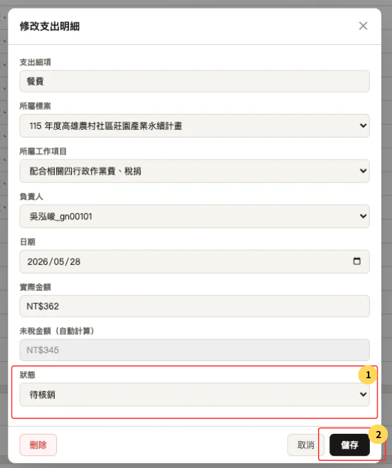
| # | 請這樣做 |
|---|---|
| 1 | 到 支出明細 點開該筆，把 狀態 改成 已核銷 |
| 2 | 點 儲存 |
一句話：先記支出、用費用管理看全貌；要請款才開付款申請，列印後記得改已核銷。
以下兩種標案才封存：
正確順序：
Lark 左側知識庫 → 建立新知識庫 → 選空白範本 → 填名稱與分類 → 建立 → 複製連結 → 回 ximo 系統時程管理 → 狀態改封存 → 貼網址 → 確認封存 → 跳到知識庫（前台甘特圖不再顯示）
圖 1｜打開 Lark，點左側 知識庫，再點右上角 建立新知識庫。
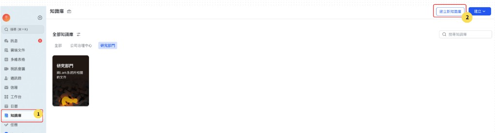
| # | 請這樣做 |
|---|---|
| 1 | 點左側 知識庫 |
| 2 | 點右上角 建立新知識庫 |
圖 2｜選擇範本後點下一步。
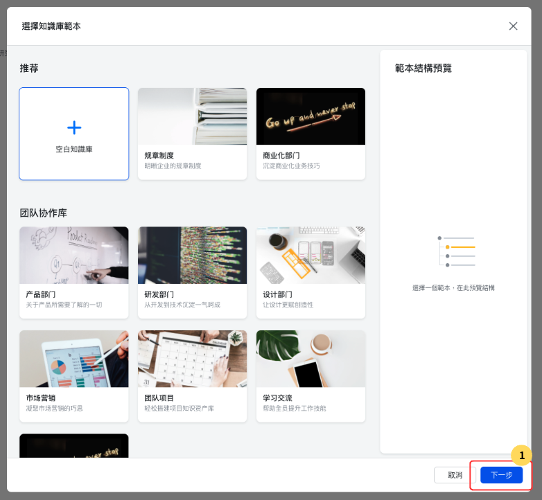
| # | 請這樣做 |
|---|---|
| 1 | 選 空白知識庫，點 下一步 |
圖 3｜輸入名稱與分類後建立。
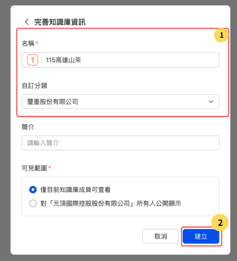
| # | 請這樣做 |
|---|---|
| 1 | 填 名稱（建議用標案名）、選 自訂分類 |
| 2 | 點 建立 |
圖 4｜進入剛建立的知識庫，右上角點 複製連結。
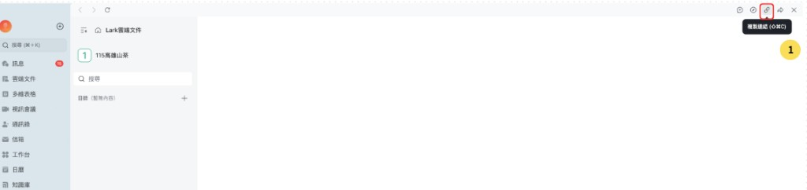
| # | 請這樣做 |
|---|---|
| 1 | 點右上角 複製連結 |
圖 5｜回到 ximo 系統，在 時程管理 把狀態從進行中改成 封存。
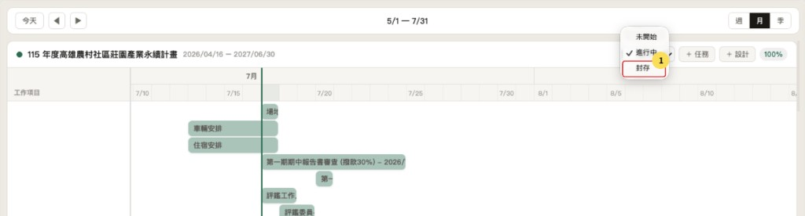
| # | 請這樣做 |
|---|---|
| 1 | 點頂部 時程管理，把狀態改成 封存 |
圖 6｜貼上剛複製的知識庫網址，確認封存。
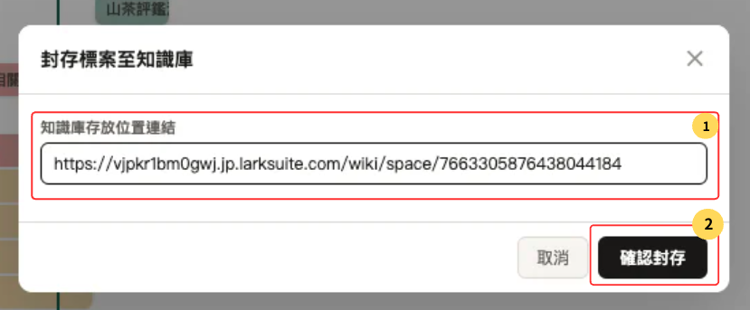
| # | 請這樣做 |
|---|---|
| 1 | 把剛複製的網址貼到 知識庫存放位置連結 |
| 2 | 點 確認封存 |
圖 7｜封存後會跳到知識庫畫面；前台就不會再顯示這個標案的甘特圖。
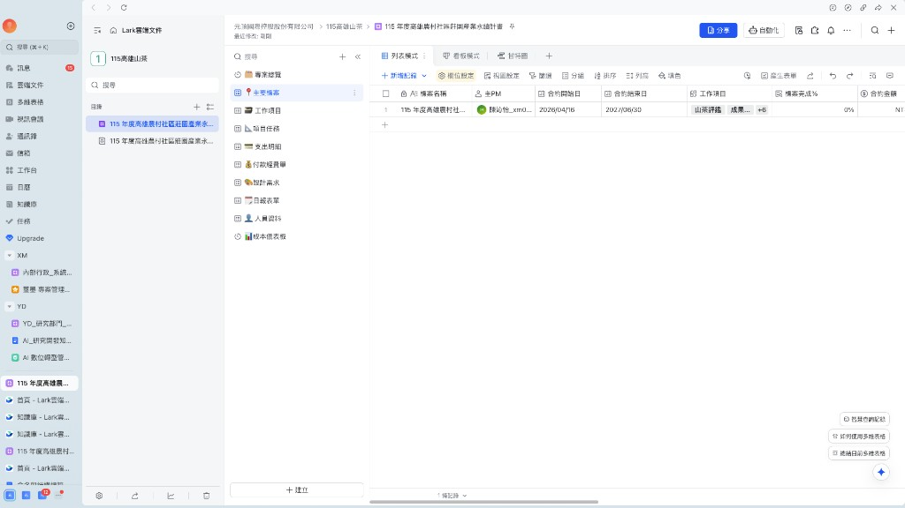